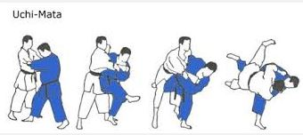
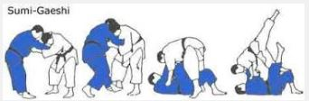
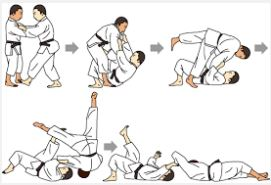

Throwing People Around
Introduction to my favourite throws
To be able to throw a person You will need to be able to break that persons balance . You simple do not ust grab a person and peform a throw. Usually a person in balance is very hard to move or throw. So to be able to perform a good effortless and flowing throw, then You will need to consider these basic points:
-
Get the opponent of balance by using:
- Pull and Drag
- Hit and Push
- Using opponents force
-
Get into close range by:
- Stepping in
- Tightning contact
- Using opponents force
-
Get into corrrect position by:
- Moving into opponents weak spot
- Good and fast footwork
- Well balanced and good posture
Uchi Mata
This throw is one of the highest-scoring throws in competition Judo, but be warned: it requires a lot of work to get good at. Then again, Uchi Mata works well against bent-over postures that are so common in BJJ so that work might just be worth it…
With Uchi Mata you partially turn your back towards your opponent while pulling very hard to off balance him, and then use one of your legs to lift your opponent off the ground and/or kick his leg out. Either way he tumbles to the ground.
There are many variations of Uchi Mata, including hopping versions, non-standard grip versions, and attacking the near leg, far leg, or straight up the middle.
Yoko Sumi Gaeshi
Of the techniques listed here Yoko Sumi Gaeshi is probably seen the least often in competition. But it is undoubtedly effective, and it’s also one of my very favourite throws.
The initial gripping for this sacrifice throw is critical: one of your arms controls his arm, and your other arm goes behind his body. This grip has similarities to a 2-on-1 (or Russian) grip in Wrestling, except you’re coming over his back with one of your arms rather than having both your grips controlling his one arm. This allows you to drop your weight on his shoulder, breaking his posture and limiting his mobility.
If this throw is successful (and you follow up correctly) then it’s very hard for your opponent put you into the guard. You typically end up in a very strong side control position, ready to continue your attack and tap him out!
Tomoe Nage
Tomoe Nage is a Judo sacrifice throw. Sacrifice throws are called that because you temporarily put yourself under your opponent before throwing him. This may sound like a dumb idea, but the sacrifice actually allows you to generate a lot of momentum and get very deep under his centre of gravity.
Certain Judo throws – and Tomoe Nage is one of them – are very well suited for BJJ practitioners, because if you screw them up (i.e. if your opponent doesn’t get thrown) then you usually end up in the guard rather than being completely and utterly out of position.
This throw comes in two broad categories: traditional or straight-on Tomoe Nage, and sideways Tomoe Nage (also known as ‘Yoko Tomoe Nage’).